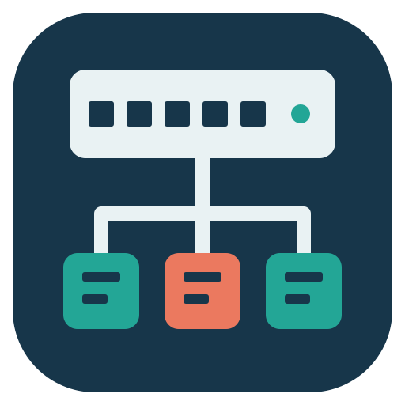

NEW DRAWING
Build a site diagram
Import device configurations, Auvik reports or show-command captures, open a saved project, or explore the editable sample.

NetworkDiagramStudioSite documentationNEW DRAWING
Import device configurations, Auvik reports or show-command captures, open a saved project, or explore the editable sample.